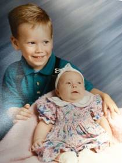
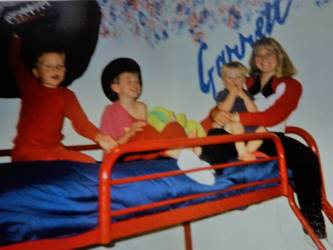
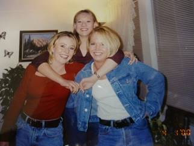

Chapter 46 - GRANDCHILDREN: December 1998
We enjoy David & Taylor. They are such cute little grandchildren - so well behaved, bright and fun to be with. Mike & Becky are doing a good job of raising these children. Sometimes I feel Mike is too strict on them, but he loves them and both he & Becky teach them what's right and set a good example for them and are good parents. We are proud of them. (They were older, than this picture, in 1998, so were Shellie & Roy’s sons.)

Shellie & Roy also have three such well-behaved & bright sons, Garrett, Quint and Kevis. When we go down to visit them, usually once or twice a year, we join with them in kneeling for family prayer both night and morning. We join with them in reading scripture each night before bedtime, and we join with them in Family Home Evening each week. They take turns giving prayers, conducting, giving the lesson, preparing the refreshments and planning games or other activities. I am amazed at the questions and comments they make. They are being taught well and are special children. Shellie, takes the lead in seeing that these things happen, and Roy is not always with them as he is doing projects, working late or sleeping in, etc. Shellie struggles with this, and we wish he was more spiritual, but he is a good man and a good provider. Shellie has the boys do chores too, which is teaching them the value of work. Since Roy is a good provider, they go on trips, buy fun vehicles, games, etc., and have beautiful homes. I, and sometimes, Ken, have gone down to be with the boys while Shellie & Roy take vacations and that has been fun getting to be with these grandsons which we don’t see as often as our grandchildren in Utah.

Since I'm mentioning our grandchildren, I wouldn't want to leave out JaNae & Chelci either. They are beautiful girls, and it has been great watching them grow up and attending their special events in life. I'm proud of Sandi. She loves her girls and has done a lot for and with them. I loved tending the girls when we lived in Grantsville, but then we moved to Firth for a couple of years and then to Arizona for nine months, but they came to visit us in Firth and we loved visiting them. Sandi brought the girls and came with Grandma Jensen once while we were living there. When we moved to Grandma Jensen’s, I had the girls come for a week each summer and we would have fun going swimming, making cookies, going to the Mall, playing games, etc. We pray for each of our children and grandchildren. This is both an exciting and wonderful, yet frightening world in which to live. There is so much goodness, yet so much evil. Satan has a lot of power and we have to be so careful to stay on the straight and narrow path which leads back to our Heavenly Father. I pray that we can all make the right decisions and live righteously so we can be an eternal family.
David & Shauna had a beautiful baby son, Tyler, on Oct. 28, 1998. We are enjoying him. David & Shauna are sure happy with him and are wonderful parents.
GRANDCHILDREN – ON THROUGH THE YEARS